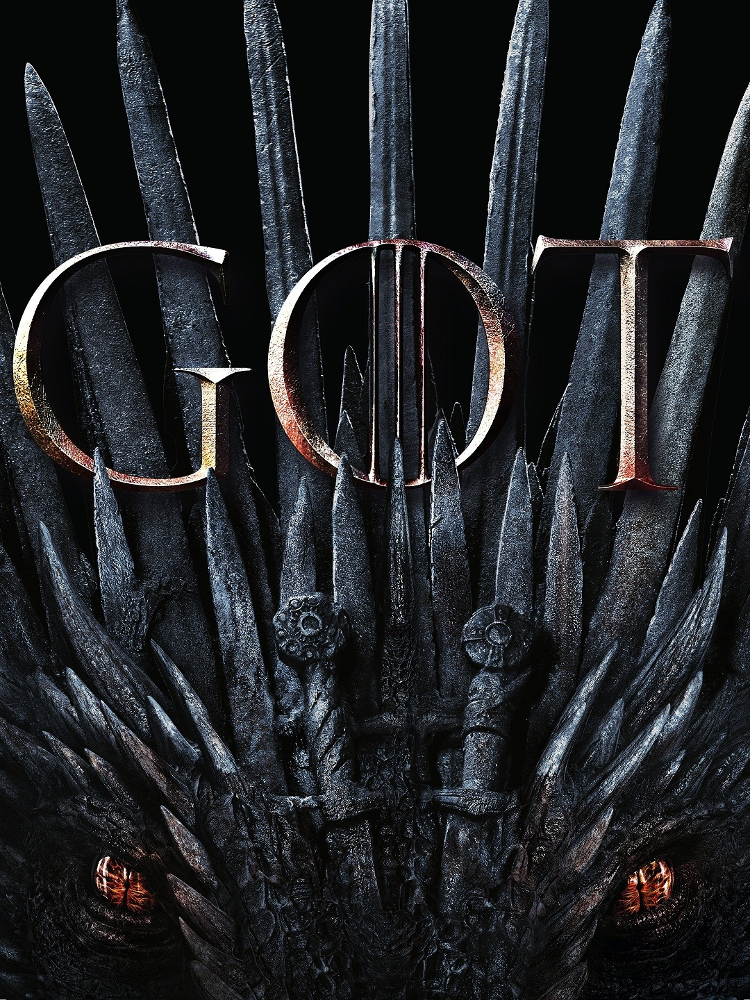
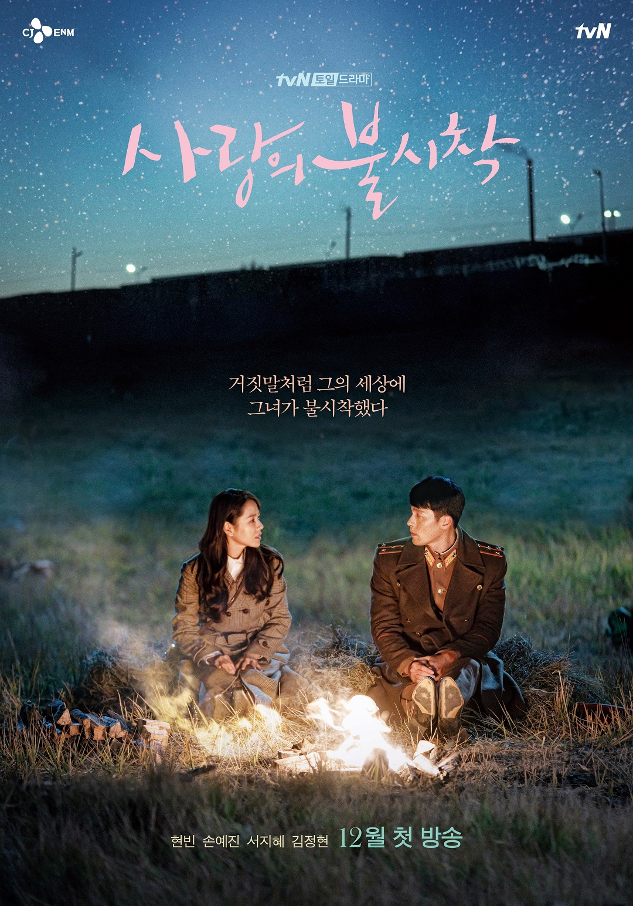
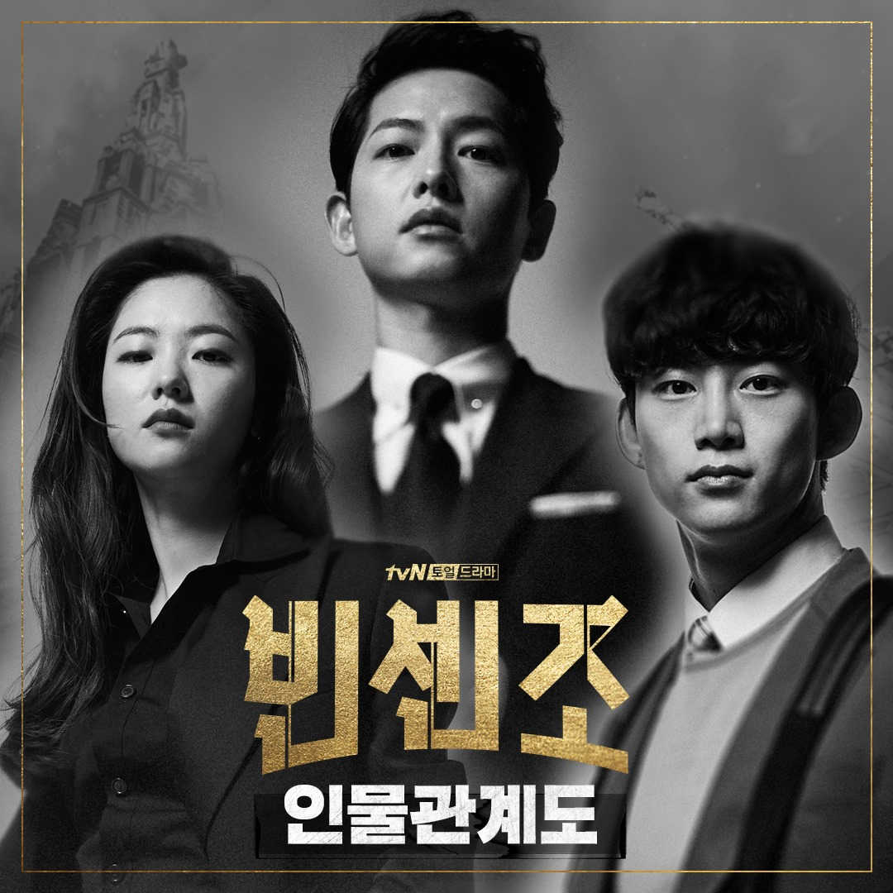
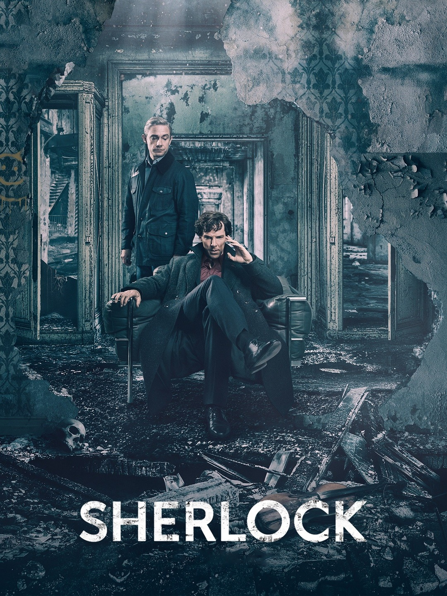
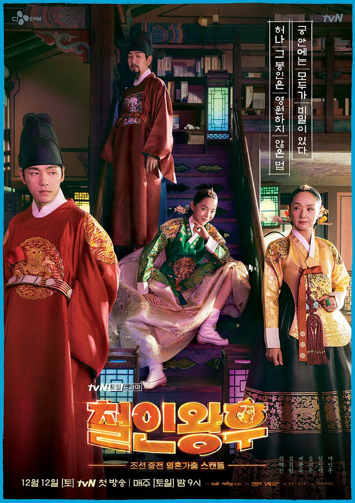

Game of Thrones
# of Episodes: 73
Description: Nine noble families fight for control over the lands of Westeros,
while an ancient enemy returns after being dormant for millennia.
Where to Watch:
HBO Max
Why I Like It: I watched this show with my dad when I was in high school and I fell in love with the
world that was created and the characters. I like that it's based on books, so I started reading them (but I never finished
them because they were too long and I didn't have the time to dedicate to it). When the last season was about to come out, we
rewatched the whole show and watched the new season as it came out. It was like a monumental event after all of the attention it
had garnered over the years. I even did my promposal to one of my friends, who was the only other person in my friend group
that watched the show, with this as the theme.

Crash Landing on You
# of Episodes: 16
Description: The absolute top secret love story of a chaebol heiress who made an emergency landing in North Korea because
of a paragliding accident and a North Korean special officer who falls in love with her and who is hiding and protecting her.
Where to Watch: Netflix
Why I Like It: This was the second Kdrama I ever watched, which was in the middle of quarantine last year. I binged
this show in about 3 days. I cried for most of it, both due to sadness and happiness. I also fell in love with its soundtrack. It affected
me so much that if I listened to some of the songs after I finished the show, I would break down in tears remembering certain scenes from the
show. During last fall semester, one of my best friends wanted to watch it, so I rewatched it with her. We finished it pretty quickly despite
being in classes and I cried even more than the first time, but it was really great to watch again and bond with my best friend.

Vincenzo
# of Episodes: 20
Description: During a visit to his motherland, a Korean-Italian mafia lawyer gives an unrivaled conglomerate a taste of its own medicine
with a side of justice.
Where to Watch: Netflix
Why I Like It: This is one of the few shows I knew about before it came out. The main character is played by one of the actors
in some of my first Kdramas and is really well known in the industry. I also like the topic of having Italian mafia cross-over with Korean conglomerates.
The soundtrack was amazing and the show was really funny, for the most part. The action scenes were really well done and had a great level of surprise
and intensity that was electrifying.

Sherlock
# of Episodes: 12
Description: In this contemporary version of Sir Arthur Conan Doyle's detective stories, Dr. John Watson is a war vet just home from Afghanistan.
He meets the brilliant but eccentric Holmes when the latter, who serves as a consultant to Scotland Yard, advertises for a flatmate. Almost as soon as Watson
moves into the Baker Street flat, they are embroiled in mysteries, and Sherlock's nemesis, Moriarty, appears to have a hand in the crimes.
Where to Watch:
Prime Video
Why I Like It: I love to read, so of course I read the classic Sherlock Holmes books by Sir Arthur Conan Doyle. I even got the special leather edition
with gold pages for my birthday. Because of this, I watched this show, along with many other movies and shows about the adventures of Sherlock Holmes. I watched this with my dad
and loved the stories, the suspense, and the interconnectedness that comes from Sherlock's deductions. I also like Benedict Cumberbatch's acting from The Hobbit so I had to follow him to this show
as well.

Mr. Queen
# of Episodes: 20
Description: When a modern day chef gets trapped in the body of a queen in the Joseon era, chaos ensues.
Where to Watch: Viki
Why I Like It: I started watching the show because of the main actor (he was in Crash Landing on You listed above). I got hooked on this show because it was so funny and a refreshing
story since a male cook from the present gets trapped in the body of the queen from about 200 years before. It also talks about caring for yourself and enjoying your life, no matter what you are doing, which I really liked
because not a lot of shows can put all of that together in a coherent way. It was very wholesome and, most of the time, left me feeling really happy.